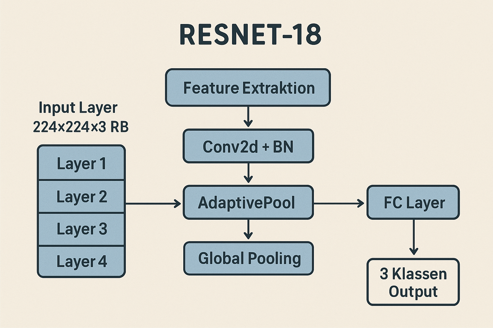
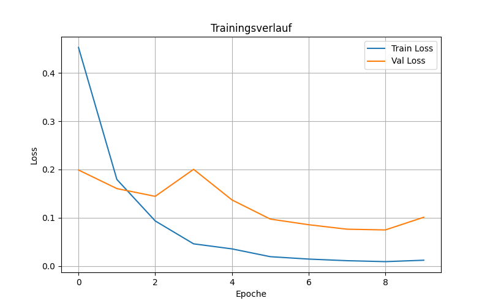
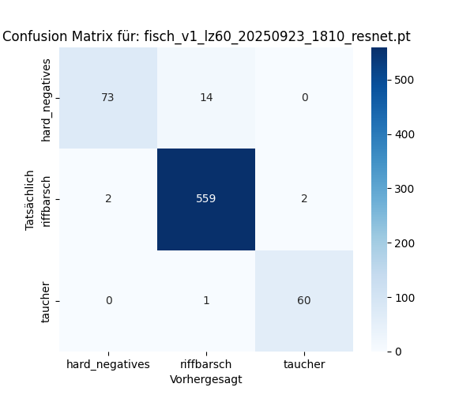
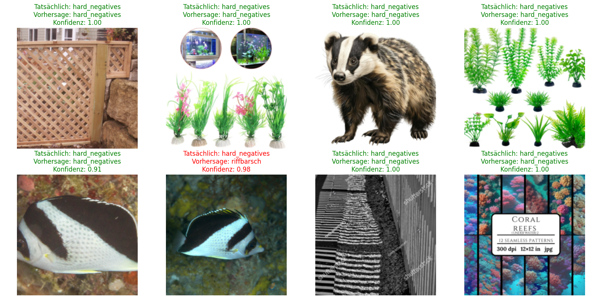
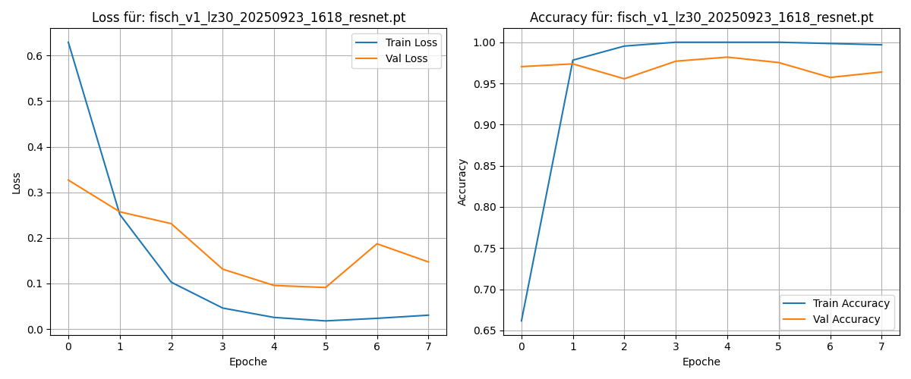
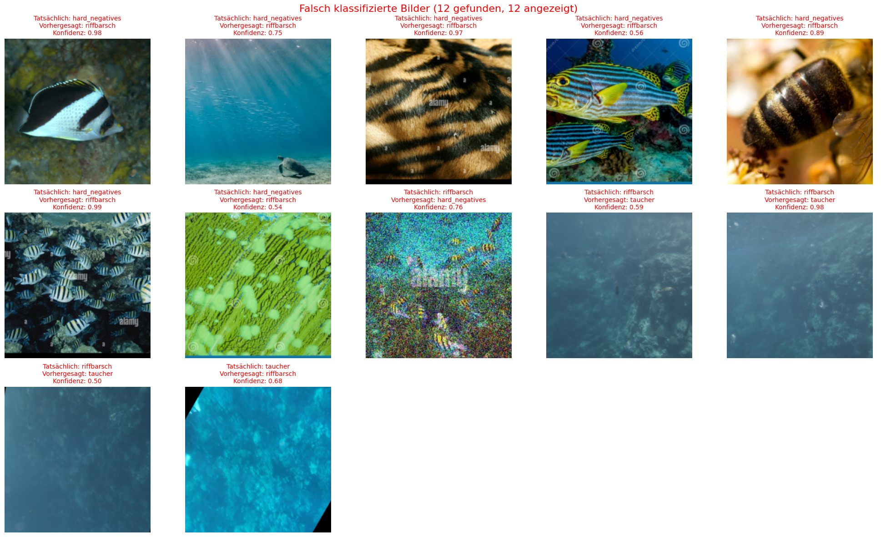

Vollautomatische Computer Vision Pipeline mit PyTorch & Erweiterten Analysen
Dieses Modul implementiert eine vollständige Deep Learning Training Pipeline mit Transfer Learning basierend auf ResNet18/50 für Multi-Class Image Classification.





Automatisches Training-Stop nach 5 Epochen ohne Validation-Loss Verbesserung
Verhindert Overfitting und spart Rechenzeit
